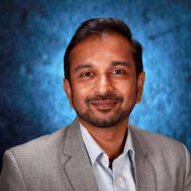
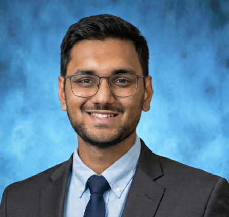

Our Team
Meet the researchers behind the high-fidelity simulations at LANCA.

Dr. Kiran Ramesh
Associate Professor
Expertise is in unsteady fluid dynamics, vortex dynamics, turbulence and flow control.

Saumya Mehta
PhD Student
Focuses on unsteady and separated external flows, with an emphasis on developing efficient machine-learning enhanced reduced-order models for real-time simulation and control.
Shengyinghao Chen
PhD Student
Focuses on unsteady and separated external flows, with an emphasis on developing efficient machine learning–enhanced computational fluid dynamics (CFD) methods for high-fidelity simulations.